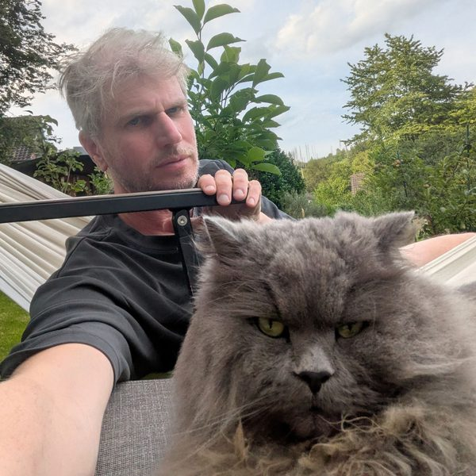

Jürgen Hermes

Ich bin wissenschaftlicher Angestellter an der Universität zu Köln und im Rahmen dieser Tätigkeit Geschäftsführer des Instituts für Digital Humanities (IDH).
Ich forsche in den Bereichen Digital Humanities und Computerlinguistik. Mich interessiert vor allem die Schnittstelle, an der Sprache/Text und Berechnung aufeinandertreffen: Was Texte sind, wie sie von Maschinen verarbeitet werden und zunehmend auch, was große Sprachmodelle für die Geisteswissenschaften leisten können und wo die Grenzen ihres Einsatzes liegen.
- Große Sprachmodelle in den Geisteswissenschaften – offene Modelle in der Forschungspraxis, Prominenz in LLMs (Mitarbeit beim Teilprojekt C11 des SFB 1252 Prominence in Language), Informationsextraktion aus historischen Texten
- Digital-Humanities-Projekte – u. a. Viennese Feuilleton and Biopolitics in the Interwar Period (DFG), das Pariser Adressbuch von 1854 (mit dem DHI Paris), edition humboldt digital
- Historische Kryptologie – die Polygraphia des Trithemius und das Voynich-Manuskript (mehr)
- Werkzeuge für die Public Humanities – autoChirp, autoPost, autodone, Tiwoli, LitMap, siehe auch Webprojekte
Pro Semester übernehme ich mindestens zwei Lehrveranstaltungen, darunter eine BA-Einführung in die Computerlinguistik (im Wintersemester) bzw. in die Statistik (im Sommersemester). Dazu leite ich in jedem Semester eine MA-Veranstaltung mit wechselnden Themen (in letzter Zeit etwa zu OpenLLMs, zu Public Humanities Tools und zum Voynich-Manuskript). In den Sommersemestern veranstalte ich darüber hinaus noch mit Kolleg:innen das Kolloquium Digital Humanities Cologne mit Gastdozierenden, deren Vorträge im Anschluss von Studierenden gebloggt werden (Blog des Kolloquiums). Eine Übersicht zu meinen Lehrveranstaltungen und den verwendeten Materialien findet sich hier.
I'm a member of the academic staff at the University of Cologne and, in this role, managing director of the Institute for Digital Humanities (IDH).
My research is in digital humanities and computational linguistics. I'm mainly interested in the interface where language/text and computation meet: what texts are, how machines process them and, increasingly, what large language models can do for the humanities – and where the limits of their use lie.
- Large language models in the humanities – open models in research practice, prominence in LLMs (contributing to project C11 of the CRC 1252 Prominence in Language), information extraction from historical texts
- Digital humanities projects – e.g. Viennese Feuilleton and Biopolitics in the Interwar Period (DFG), the Paris address book of 1854 (with the DHI Paris), edition humboldt digital
- Historical cryptography – Trithemius’ Polygraphia and the Voynich manuscript (more)
- Public humanities tools – autoChirp, autoPost, autodone, Tiwoli, LitMap; see also web projects
Each semester I teach at least two courses, among them a BA introduction to computational linguistics (winter semester) or to statistics (summer semester). In addition, I run an MA course every semester on changing topics (recently, for example, open LLMs, public humanities tools and the Voynich manuscript). In summer semesters I also co-organise the colloquium Digital Humanities Cologne with guest speakers, whose talks are afterwards written up as blog posts by students (colloquium blog, in German). An overview of my courses and their materials is available here.
Ausgewählte PublikationenSelected publications
- Dick, A.-K., Hermes, J. & Reiter, N. (2026). Scaffolding Large and Small Reasoning Models for Person-Place Relation Extraction. CLEF 2026 Working Notes, CEUR-WS Vol. 4283. PDF
- Wagner, A. & Hermes, J. (2026). Encoded Humanities, or: Not Everything Has to Be Generative. In Understanding Science with Large Language Models?, transcript, 101–114. VerlagPublisher
- Hermes, J., Niebes, K., Oberbichler, S. & Wagner, A. (2026). LLMs unter Kontrolle: Offene Modelle in Forschung und Praxis. Workshop, DHd 2026, WienVienna. Zenodo
- Hermes, J. (2023). Durch neuronale Netze zur Lingua Franca? Wie Algorithmen unsere Kommunikation bestimmen. In Wissen ordnen und entgrenzen, Vandenhoeck & Ruprecht, 47–64. eLibrary
- Hermes, J. (2022). Polygraphia III: The Cipher That Pretends to Be an Artificial Language. Proceedings of VOY2022, CEUR-WS Vol. 3313. Paper
- Hermes, J. (2012). Textprozessierung – Design und Applikation. Dissertation, Universität zu Köln.PhD thesis, University of Cologne. KUPS
Vollständige Publikations- und Vortragslisten: Complete lists of publications and talks: Profil an der Universität zu KölnUniversity of Cologne profile · ORCID · Google Scholar
WebprojekteWeb projects
Eine Übersicht meiner Webprojekte – literarische Experimente, Karten literarischer Schauplätze und das Lehrportal Voynich Studies Cologne – findet sich unter Projekte.
An overview of my web projects – literary experiments, maps of literary places and the teaching portal Voynich Studies Cologne – is on the Projects page.
KontaktContact
hermesj[AT]uni-koeln.de
Außerdem:Elsewhere: Mastodon · GitHub · Knowledge Commons · Forschungsblogresearch blog TEXperimenTales · privates Blog Hysteron Proteronpersonal blog Hysteron Proteron · Lehrmaterialienteaching materials
Wenn Sie mit mir Kontakt aufnehmen möchten, weil es Ihnen um das Voynich-Manuskript geht, lesen Sie bitte möglichst vorher diese Seite.
If you would like to contact me about the Voynich manuscript, please read this page first if you can.